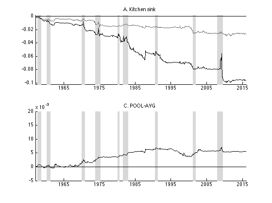
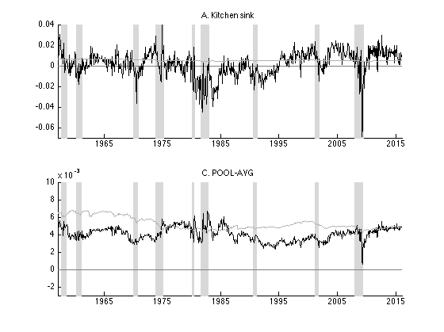

Study of Rapach and Zhou's 2012 paper uing updated data
Author: Peiliang Guo Runs 14 regressors including market info and macro factors on equity premium Predicts out of sample market returns and compare with historical average benchmark prediction. Includes predictions using Kitchen-sink and POOL-avg prediction
Contents
helper functions
warning('off','all') dbtype predict_r.m dbtype plot_pred.m dbtype plot_pred_perf.m
1 function pred = predict_r(X,y,test_idx) 2 l = length(X); 3 const_ones = ones(l,1); 4 pred = zeros(l-test_idx+1,1); 5 for i = 1: l-test_idx+1 6 hist_l = test_idx-2+i; 7 beta = regress(y(2:hist_l),[const_ones(1:hist_l-1) X(1:hist_l-1,:)]); 8 pred(i) = [1 X(hist_l,:)]*beta; 9 end 10 11 end 1 function plot_pred(pred, r_avg, test_year,custom_ylim,label) 2 l = length(pred(:,1)); 3 x_year = test_year:1/12:(test_year+l/12); 4 plot(x_year,zeros(length(x_year),1),'color',[0 0 0]+0.5) 5 6 plot(x_year,[0; pred],'color',[0 0 0]) 7 plot(x_year,[0; r_avg],'color',[0 0 0]+0.7) 8 xlim([test_year test_year+l/12]+1/12) 9 ylim(custom_ylim) 10 title(label) 11 set(gca, 'XTick', 1965:10:2015) 12 end 1 function plot_pred_perf(pred,r_avg,r_test,test_year,custom_ylim,label) 2 l = length(pred(:,1)); 3 cdsfe = zeros(l,2); 4 prev = [0 0]; 5 for i = 1:l 6 avg_err2 = (r_test(i)-r_avg(i))^2; 7 cdsfe(i,1) = prev(1) + avg_err2 - (r_test(i) - pred(i))^2; 8 cdsfe(i,2) = prev(2) + avg_err2 - (r_test(i) - max(0,pred(i)))^2; 9 prev(1) = cdsfe(i,1); 10 prev(2) = cdsfe(i,2); 11 end 12 x_year = test_year:1/12:(test_year+l/12); 13 plot(x_year,zeros(length(x_year),1),'color',[0 0 0]) 14 plot(x_year,[0; cdsfe(:,2)],'color',[0 0 0]+0.4) 15 plot(x_year,[0; cdsfe(:,1)],'color',[0 0 0]) 16 xlim([test_year test_year+l/12]+1/12) 17 ylim(custom_ylim) 18 title(label) 19 set(gca, 'XTick', 1965:10:2015) 20 end 21
data processing
raw_data = xlsread('PredictorData2015.xlsx','Monthly'); label = {'A. log(DP)', 'B. log(DY)', 'C. log(EP)', 'D. log(DE)',... 'E. SVAR', 'F. BM', 'G. NTIS', 'H. TBL',... 'I. LTY', 'J. LTR', 'K.TMS', 'L. DFY',... 'M. DFR', 'N. INFL'}; % starting date of monthly data Dec 1926 begin_date = 192612; begin_idx = find(raw_data(:,1)== begin_date); lagged_data = raw_data(begin_idx-1,:); %data at one lag raw_data = raw_data(begin_idx:end,:); %out of sample testing begins from Jan 1957 test_date = 195701; test_idx = find(raw_data(:,1)==test_date); test_year = round(test_date/100); %NBER data indicating troughs of business cycles (after 1957) troughs = [195708 195808; 196004 196102; 196912 197011; 197311 197503; 198001 198007; 198107 198211; 199007 199103; 200103 200111; 200712 200906]; %realized equity premium (excess return) r = log(1+raw_data(:,17))-raw_data(:,11); %predictors log_price = log(raw_data(:,2)); log_div = log(raw_data(:,3)); log_earning = log(raw_data(:,4)); log_dp = log_div - log_price; log_dy = log_div - [log(lagged_data(1,2)); log_price(1:end-1)]; log_ep = log_earning - log_price; log_de = log_div - log_earning; svar = raw_data(:,15); bm = raw_data(:,5); ntis = raw_data(:,10); tbl = raw_data(:,6); lty = raw_data(:,9); ltr = raw_data(:,13); tms = lty - tbl; dfy = raw_data(:,8) - raw_data(:,7); dfr = raw_data(:,14) - ltr; infl = raw_data(:,12); pred_data = zeros(length(raw_data),14); pred_data(:,1) = log_dp; pred_data(:,2) = log_dy; pred_data(:,3) = log_ep; pred_data(:,4) = log_de; pred_data(:,5) = svar; pred_data(:,6) = bm; pred_data(:,7) = ntis; pred_data(:,8) = tbl; pred_data(:,9) = lty; pred_data(:,10) = ltr; pred_data(:,11) = tms; pred_data(:,12) = dfy; pred_data(:,13) = dfr; pred_data(:,14) = infl; %benchmark historical avg mkt test_len = length(raw_data) - test_idx + 1; r_avg = zeros(test_len,1); prev_r_avg = mean(r(1:test_idx-1)); for i = 1:test_len r_avg(i) = prev_r_avg; prev_r_avg = (prev_r_avg*(test_idx-2+i)+... r(test_idx-1+i))/(test_idx-1+i); end
Making predictions using predictors, and plotting
prediction performance measured by sum of squared error of ep_avg benchmark minus sse of prediction
% actual historical equity premium r_test = r(test_idx:end); %initializing prediction matrix r_pred = zeros(length(raw_data)-test_idx+1,16); %prediction for i = 1:14 r_pred(:,i) = predict_r(pred_data(:,i),r,test_idx); end %kitchen sink pred r_pred(:,15) = predict_r(pred_data,r,test_idx); %pool-avg pred r_pred(:,16) = mean(r_pred(:,1:14),2);
Performance of predictions of individual predictors
Measured by cumulative error relative to historical average prediction
figure(1) set(gcf,'units','centimeters','position',[0 0 30 30]) for i = 1:14 subplot(4,4,i) hold on plot_troughs(troughs) plot_pred_perf(r_pred(:,i), r_avg, r_test,test_year,[-0.029 0.02],label(i)) hold off end

Plot of Actual predictions from individual predictors
figure(2) set(gcf,'units','centimeters','position',[0 0 30 30]) for i = 1:14 subplot(4,4,i) hold on plot_troughs(troughs) plot_pred(r_pred(:,i), r_avg, test_year,[-0.025,0.025],label(i)) hold off end

Performance of Kitchen sink and POOL-AVG predictions
figure(3) subplot(2,1,1) hold on plot_troughs(troughs) plot_pred_perf(r_pred(:,15), r_avg, r_test,test_year,[-0.102 0.002],'A. Kitchen sink') hold off subplot(2,1,2) hold on plot_troughs(troughs) plot_pred_perf(r_pred(:,16), r_avg, r_test,test_year,[-0.005 0.02],'C. POOL-AVG') hold off
Actual predictions of Kitchen sink and POOL-AVG
figure(4) subplot(2,1,1) hold on plot_troughs(troughs) plot_pred(r_pred(:,15),r_avg,test_year,[-0.07,0.04],'A. Kitchen sink') hold off subplot(2,1,2) hold on plot_troughs(troughs) plot_pred(r_pred(:,16),r_avg,test_year,[-0.003,0.01],'C. POOL-AVG') hold off